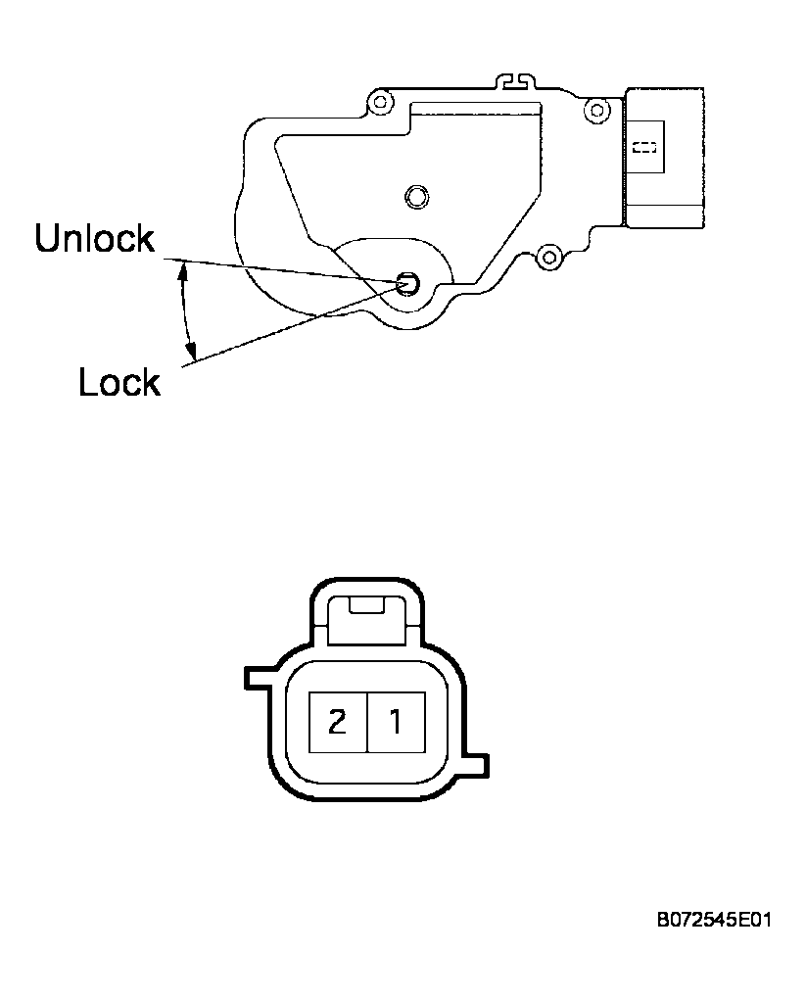
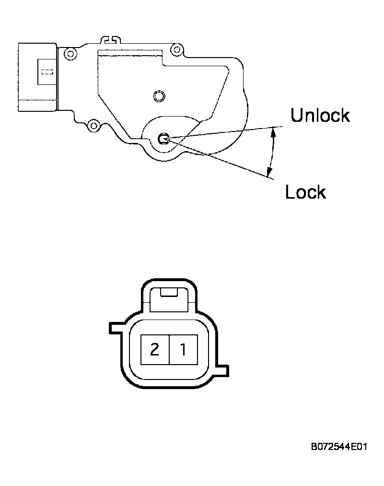

Rear Door Lock: Inspection
- INSPECT REAR DOOR LOCK ACTUATOR ASSEMBLY LH
- Apply battery voltage to the actuator terminals and check operation of the door lock motor.
OK : Go to Next Step

Courtesy of © TOYOTA, LICENSE AGREEMENT TMS1002MEASUREMENT SPECIFIED CONDITIONMeasurement Condition Specified Condition Battery positive (+) --> Terminal 2
Battery negative (-) --> Terminal 1Lock Battery positive (+) --> Terminal 1
Battery negative (-) --> Terminal 2Unlock If the result is not as specified, replace the actuator.
- Apply battery voltage to the actuator terminals and check operation of the door lock motor.
- INSPECT REAR DOOR LOCK ACTUATOR ASSEMBLY RH
- Apply battery voltage to the actuator terminals and check operation of the door lock motor.
OK : Go to Next Step

Courtesy of © TOYOTA, LICENSE AGREEMENT TMS1002TESTER CONNECTION SPECIFIED CONDITIONMeasurement Condition Specified Condition Battery positive (+) --> Terminal 2
Battery negative (-) --> Terminal 1Lock Battery positive (+) --> Terminal 1
Battery negative (-) --> Terminal 2Unlock If the result is not as specified, replace the actuator.
- Apply battery voltage to the actuator terminals and check operation of the door lock motor.